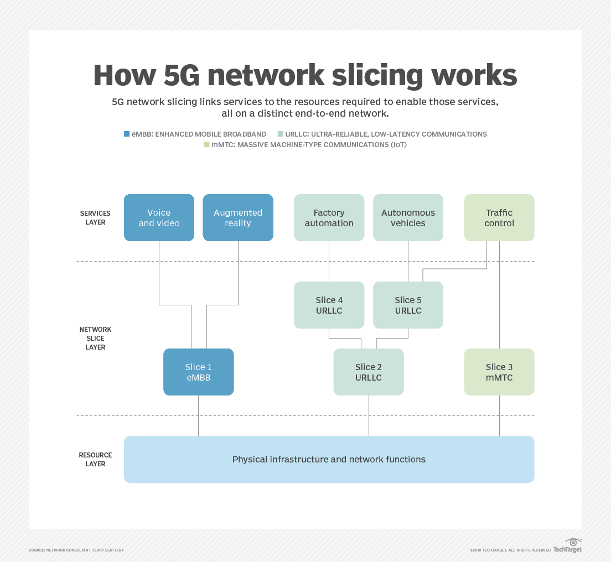

Network Slicing overlays multiple virtual network on top of a shared network. Each slice of the network can have its own logical topology, security rules and performance characteristics -- within the limits imposed by the underlying physical networks.
Different slices can be dedicated to different purposes, such as ensuring a specific application or service gets priority access to capacity and delivery or isolating traffic for specific users or device classes. Slicing networks enables the network operator to maximize the use of network resources and service flexibility.
Slicing technologies on Ethernet networks are as old as virtual local area networks (VLANs) The concept has been more fully realized with the rise of software-defined networking and, more recently, software-defined wide area network (SD-WAN), which applies SDN concepts to wide area networking. SDN separates the network's control plane from the packet-handling data plane. It enables the control plane to define virtual networks by defining packet-handling rules and pushing those rules out to the data plane devices for execution.
This control of the data plane applies to both physical and virtual network devices managed under the SDN controller, which is a physical switch in a rack or a virtual switch running in a cloud environment or on a hypervisor in the data center.
For some use cases, the network operator will want or need to dedicate network infrastructure to a specific slice of the network, like assigning a virtual firewall to a specific virtual network instead of using a shared firewall. In some cases, this step is done to meet specific customer compliance or network security requirements. In other cases, network managers will look to improve network performance or minimize the overhead of providing services. For example, network operators could deploy an instance of a low-cost or free firewall instead of paying for a more expensive one.
The flip side of slicing is aggregation. An SDN approach does enable aggregation of physical connectivity -- the melding of multiple physical connections into a switch, for example -- with the resulting pooled capacity then made available for slicing.
Network slicing is a key feature of 5G, applying the same principles of virtualization to the radio access networks (RANs) and the supporting backhaul and carrier core networks that underlie 5G. Slicing enables service providers to make meaningful guarantees to customers regarding, say, a minimum amount of throughput for their connections or priority delivery of packets from specific types of devices or applications.
A 5G network operator can physically segregate traffic on different radio networks, slice a single network, or combine the capacity of multiple networks and slice the pooled resources. This enables 5G network operators to choose the characteristics needed to support their target levels of spectrum efficiency, traffic capacity and connection density, which is how many devices can connect from a given space.
Network slicing supports use cases that focus on performance, capacity and security. Many use cases involve emerging internet of things (IoT) business models. Some network slicing use cases include the following:
Performance.A company depending on a 5G network for autonomous vehicle management might contract for a mobile network slice with latencies under 5 milliseconds (ms) on a guaranteed minimum throughput per vehicle to ensure responsive control. The provider would provision the slice on the lowest-latency equipment and paths between vehicles and cloud or edge resources and reserve enough capacity to meet the throughput target.
Capacity.For a security monitoring system in a large auditorium, latency may not matter. But the security company may want to buy guaranteed delivery of the camera data. In other words, the company would want its traffic to get 1.5 megabits per second (Mbps) of throughput per camera with no packets dropped, ever. The provider might aggregate multiple connectivity and processing device options to meet the needs of this slice.
SecurityFor a human health monitoring system in a metropolitan area, a hospital might want to isolate all traffic to and from pacemakers. This would minimize the risk of a leak of customer data and the threat of compromise of the control channel -- so it would require a slice with single-user devices.
Enterprises and smaller businesses find slicing an attractive option on their own networks, for both performance and security management, hence the rapid rise of SD-WAN and network segmentation technologies. As 5G networks continue to mature and spread, slicing increases the utility of a wireless WAN (WWAN) and an enterprise wireless LAN (WLAN).
WWAN.Before 5G, small branch offices have depended on 4G Long-Term Evolution (LTE) as backup connectivity in case their primary wired connections fail and, less often, used it as primary connectivity. 5G, with higher speeds and slicing, will accelerate the adoption of the WWAN model and increase use as primary or sole connectivity, since companies will get meaningful service-level agreements (SLAs) that reflect the carriers' ability to control capacities and performance.
WLAN.Those same capabilities for greater control will increase the appeal of 5G as a replacement for private Wi-Fi-based WLANs. Traditionally, enterprises provision and manage a private network and implement remote and mobile network access technologies. With 5G and slicing, many will instead use 5G only. Users have the same experience independent of location thanks to mobile broadband service via a private network slice integrated to the company WAN.